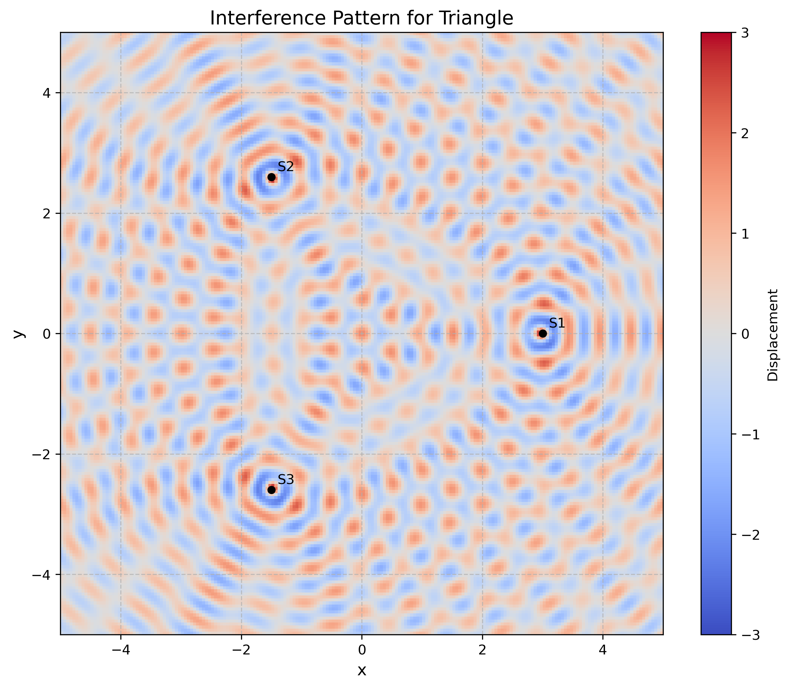
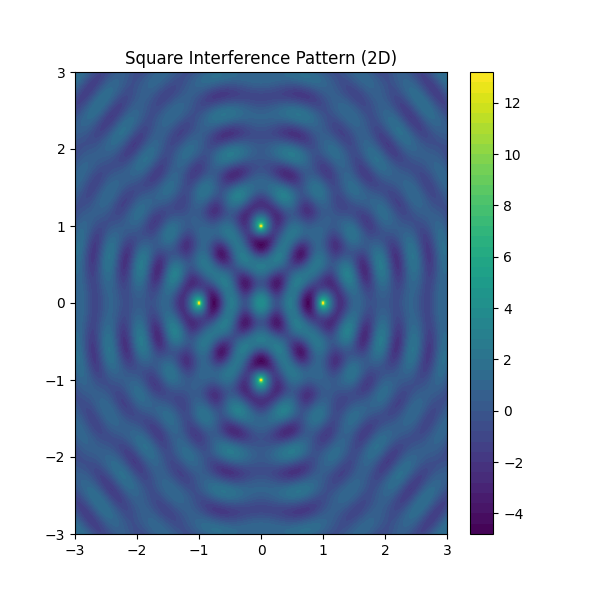
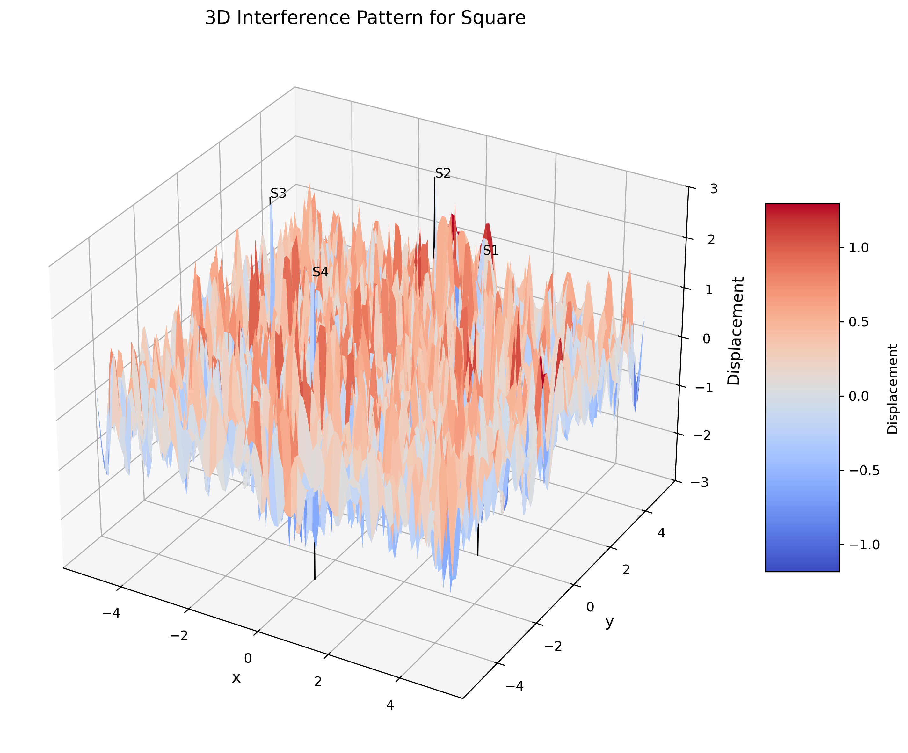
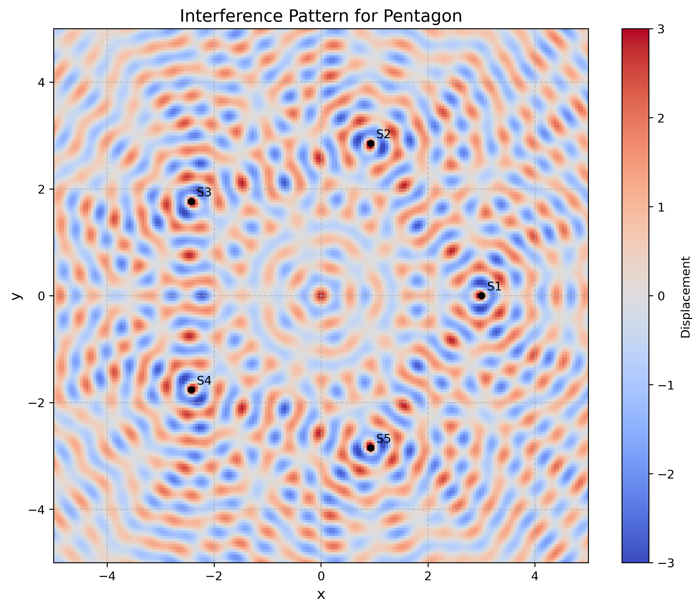
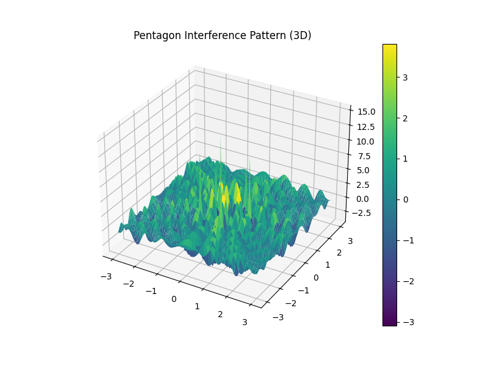
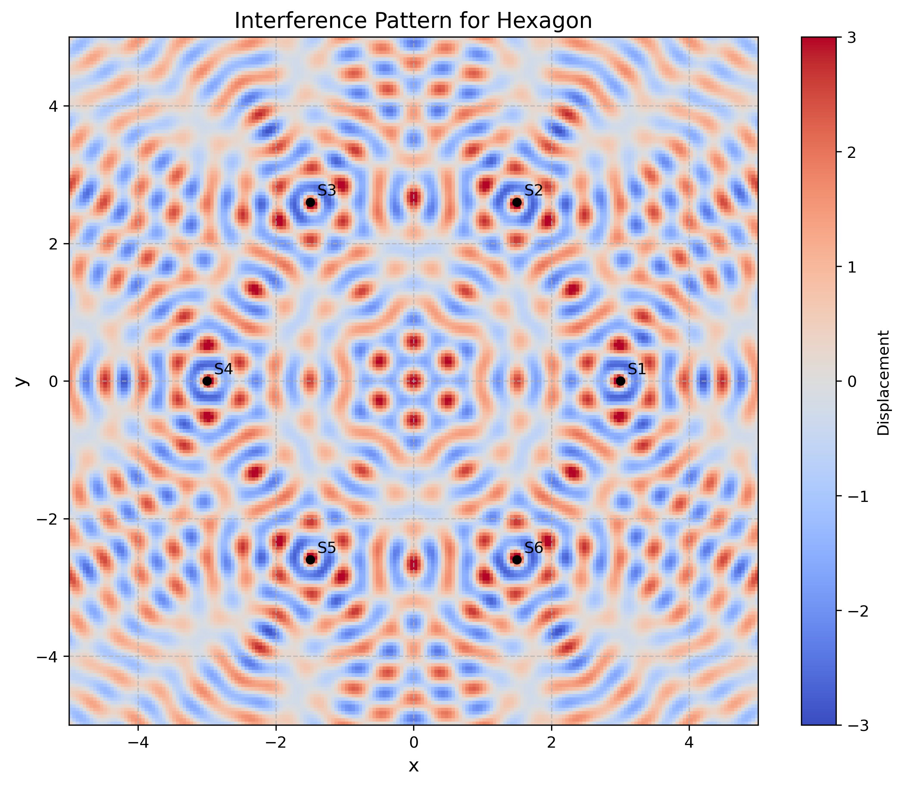
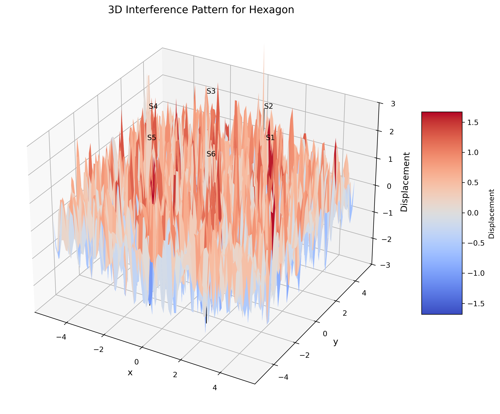

Problem 1: Interference Patterns on a Water Surface
Motivation
Interference occurs when waves from different sources overlap, creating new patterns. On a water surface, this can be easily observed when ripples from different points meet, forming distinctive interference patterns. These patterns can show us how waves combine in different ways, either reinforcing each other or canceling out.
Studying these patterns helps us understand wave behavior in a simple, visual way. It also allows us to explore important concepts, like the relationship between wave phase and the effects of multiple sources. This task offers a hands-on approach to learning about wave interactions and their real-world applications, making it an interesting and engaging way to dive into wave physics.
1. Theoretical Foundation
1.1 Wave Equation and Cylindrical Wave Solution
A circular wave on the water surface, emanating from a point source located at \((x_0, y_0)\), can be described by the cylindrical wave equation:
where: - \(\eta(x, y, t)\) is the displacement of the water surface at point \((x, y)\) and time \(t\) - \(A\) is the amplitude of the wave at unit distance - \(k = \frac{2\pi}{\lambda}\) is the wave number, related to the wavelength \(\lambda\) - \(\omega = 2\pi f\) is the angular frequency, related to the frequency \(f\) - \(r = \sqrt{(x - x_0)^2 + (y - y_0)^2}\) is the distance from the source to the point \((x, y)\) - \(\phi\) is the initial phase
1.2 Physical Basis of the Cylindrical Wave
The \(\frac{1}{\sqrt{r}}\) amplitude dependence arises from conservation of energy. For a cylindrical wave spreading in two dimensions, the wave energy is distributed over a circumference proportional to \(r\), leading to amplitude decay as \(\frac{1}{\sqrt{r}}\).
1.3 Dispersion Relation for Water Waves
For deep water waves, the dispersion relation is: \(\(\omega^2 = gk\)\)
where \(g\) is the gravitational acceleration. This gives the phase velocity: \(\(v_{phase} = \frac{\omega}{k} = \sqrt{\frac{g}{k}} = \sqrt{\frac{g\lambda}{2\pi}}\)\)
1.4 Principle of Linear Superposition
When multiple waves overlap at a point, the resulting displacement is the linear sum of the individual displacements. For \(N\) sources, the total displacement is:
where \(r_i = \sqrt{(x - x_{0i})^2 + (y - y_{0i})^2}\) is the distance from the \(i\)-th source.
1.5 Interference Conditions
Constructive Interference
Constructive interference occurs when waves arrive in phase. The condition for constructive interference is: \(\(\Delta\phi = k(r_i - r_j) + (\phi_i - \phi_j) = 2\pi n\)\)
where \(n\) is an integer and \(\Delta\phi\) is the phase difference between waves from sources \(i\) and \(j\).
Destructive Interference
Destructive interference occurs when waves arrive out of phase: \(\(\Delta\phi = k(r_i - r_j) + (\phi_i - \phi_j) = (2n + 1)\pi\)\)
1.6 Path Difference and Interference Patterns
For coherent sources with the same phase (\(\phi_i = \phi\) for all \(i\)), the interference condition depends only on the path difference: \(\(\Delta r = |r_i - r_j|\)\)
- Constructive interference: \(\Delta r = n\lambda\)
- Destructive interference: \(\Delta r = (n + \frac{1}{2})\lambda\)
2. Mathematical Analysis for Regular Polygons
2.1 Geometric Configuration
For a regular \(N\)-sided polygon with sources at vertices, the source positions are: \(\(x_i = R\cos\left(\frac{2\pi i}{N}\right), \quad y_i = R\sin\left(\frac{2\pi i}{N}\right)\)\)
where \(R\) is the circumradius and \(i = 0, 1, 2, ..., N-1\).
2.2 Symmetry Analysis
The interference pattern exhibits \(N\)-fold rotational symmetry. At the center of the polygon, all sources are equidistant, leading to constructive interference when: \(\(N \cdot \frac{A}{\sqrt{R}} \cos(kR - \omega t + \phi)\)\)
2.3 Far-Field Approximation
For observation points far from the polygon (\(r \gg R\)), we can use the far-field approximation: \(\(r_i \approx r - R\cos(\theta - \frac{2\pi i}{N})\)\)
where \(r\) and \(\theta\) are the polar coordinates of the observation point.
2.4 Intensity Distribution
The intensity (time-averaged energy flux) is proportional to the square of the amplitude: \(\(I(x, y) = \langle|\eta_{\text{total}}(x, y, t)|^2\rangle_t\)\)
For coherent sources, this includes both the individual intensities and interference terms.
3. Computational Implementation
The comprehensive Python simulation (wave_interference.py) implements:
3.1 Core Functions
calculate_displacement(): Computes displacement from a single sourcecalculate_total_displacement(): Implements superposition principlegenerate_polygon_vertices(): Creates regular polygon configurationsplot_interference_pattern(): 2D visualization with color mappingplot_3d_interference_pattern(): 3D surface visualizationcreate_interference_animation(): Time-evolution animations
3.2 Visualization Capabilities
The simulation generates: 1. 2D color maps showing interference patterns 2. 3D surface plots displaying wave amplitude 3. Animations showing temporal evolution 4. Comparative analysis for different polygon configurations
3.3 Analysis Parameters
- Wavelength: \(\lambda = 0.5\) units
- Frequency: \(f = 1.0\) Hz
- Amplitude: \(A = 1.0\) unit
- Polygon radius: \(R = 3.0\) units
- Grid resolution: 100-200 points per axis
4. Results and Analysis
4.1 Triangle (3 Vertices) Analysis
 2D interference pattern for triangular source configuration
3D visualization showing amplitude variations
Key Features: - Central maximum: All three sources contribute constructively at the center - Three primary lobes: Directed along the angle bisectors of the triangle - Amplitude: Maximum amplitude at center is approximately \(3A/\sqrt{R}\) - Symmetry: Three-fold rotational symmetry
4.2 Square (4 Vertices) Analysis
 2D interference pattern for square source configuration
 3D visualization showing four-fold symmetry
Key Features: - Diagonal enhancement: Strong constructive interference along diagonals - Cross pattern: Four primary lobes at 45° intervals - Secondary maxima: Additional interference maxima between primary lobes - Symmetry: Four-fold rotational symmetry
4.3 Pentagon (5 Vertices) Analysis
 2D interference pattern for pentagonal source configuration
 3D visualization showing five-fold symmetry
Key Features: - Five primary lobes: Equally spaced at 72° intervals - Complex structure: More intricate interference pattern - Golden ratio connections: Geometric relationships in the pattern - Symmetry: Five-fold rotational symmetry
4.4 Hexagon (6 Vertices) Analysis
 2D interference pattern for hexagonal source configuration
 3D visualization showing six-fold symmetry
Key Features: - Six primary lobes: 60° angular spacing - High symmetry: Most symmetric configuration analyzed - Ring structures: Concentric rings of constructive/destructive interference - Symmetry: Six-fold rotational symmetry
5. Quantitative Analysis
5.1 Central Amplitude Enhancement
For \(N\) coherent sources at equal distances \(R\) from the center: \(\(\eta_{\text{center}} = N \cdot \frac{A}{\sqrt{R}} \cos(kR - \omega t + \phi)\)\)
The amplitude enhancement factor is \(N\), demonstrating constructive interference.
5.2 Angular Distribution Analysis
The far-field intensity pattern for regular \(N\)-gon sources shows maxima at angles: \(\(\theta_{\text{max}} = \frac{2\pi m}{N}\)\)
where \(m = 0, 1, 2, ..., N-1\).
5.3 Interference Visibility
The visibility (contrast) of the interference pattern is defined as: \(\(V = \frac{I_{\text{max}} - I_{\text{min}}}{I_{\text{max}} + I_{\text{min}}}\)\)
Higher visibility indicates clearer interference fringes.
6. Physical Insights and Wave Phenomena
6.1 Coherence Requirements
For stable interference patterns, the sources must be: - Spatially coherent: Maintain fixed phase relationships - Temporally coherent: Have the same frequency - Amplitude stable: Consistent amplitude over observation time
6.2 Scaling Properties
The interference pattern scales with wavelength: - Pattern size: \(\propto \lambda\) - Angular resolution: \(\propto \lambda/R\) - Number of fringes: \(\propto R/\lambda\)
6.3 Energy Conservation
Despite local amplitude enhancement through constructive interference, total energy is conserved. Energy is redistributed spatially, creating regions of enhanced and diminished wave amplitude.
7. Real-World Applications
7.1 Acoustic Applications
Array Acoustics: - Loudspeaker arrays: Creating directional sound beams - Microphone arrays: Improving signal reception from specific directions - Sonar systems: Underwater detection and ranging
7.2 Electromagnetic Applications
Antenna Arrays: - Phased arrays: Steering electromagnetic beams electronically - Radio telescopes: Combining signals from multiple dishes - Radar systems: Target detection and tracking
7.3 Optical Applications
Interferometry: - Laser interferometry: Precision distance measurements - Optical coherence tomography: Medical imaging - Gravitational wave detection: LIGO and similar experiments
7.4 Water Wave Applications
Ocean Engineering: - Wave energy harvesting: Optimizing converter placement - Harbor design: Minimizing wave impacts - Tsunami modeling: Understanding wave propagation patterns
8. Advanced Considerations
8.1 Nonlinear Effects
For large amplitude waves, nonlinear effects become important: - Wave steepening: High-amplitude waves become asymmetric - Harmonic generation: Creation of higher frequency components - Wave breaking: Energy dissipation through turbulence
8.2 Dispersion Effects
For finite depth water waves: \(\(\omega^2 = gk \tanh(kh)\)\)
where \(h\) is the water depth, leading to wavelength-dependent propagation speeds.
8.3 Damping and Attenuation
Real water waves experience: - Viscous damping: Energy loss due to fluid viscosity - Wave breaking: Energy dissipation in shallow water - Surface tension effects: Important for short wavelengths
9. Experimental Verification
9.1 Laboratory Setup
Wave Tank Experiments: - Multiple mechanical wave generators - High-speed cameras for visualization - Laser profilometry for surface measurement - Controlled environmental conditions
9.2 Measurement Techniques
Surface Height Measurement: - Capacitive probes: Direct height measurement - Laser doppler velocimetry: Velocity field mapping - PIV (Particle Image Velocimetry): Flow visualization
9.3 Data Analysis
Signal Processing: - Fourier analysis: Frequency domain analysis - Wavelet transforms: Time-frequency analysis - Phase analysis: Coherence measurements
10. Conclusion
This comprehensive analysis of wave interference patterns from regular polygon source configurations demonstrates fundamental principles of wave physics:
- Superposition Principle: Linear addition of wave amplitudes creates complex patterns
- Geometric Influence: Source arrangement directly affects interference pattern symmetry
- Coherence Requirements: Stable patterns require coherent sources
- Energy Redistribution: Interference redistributes rather than creates or destroys energy
- Scaling Laws: Pattern characteristics scale predictably with wavelength and geometry
The computational simulations provide quantitative verification of theoretical predictions and offer insights into the rich physics of wave interference. Understanding these principles is crucial for applications in acoustics, electromagnetics, optics, and ocean engineering.
10.1 Key Findings
- Symmetry preservation: Interference patterns reflect source symmetry
- Central enhancement: Constructive interference maximizes at the polygon center
- Angular structure: Primary lobes align with polygon symmetry axes
- Complexity scaling: More sources create more intricate patterns
10.2 Educational Value
This problem provides an excellent introduction to: - Wave physics fundamentals - Mathematical modeling of physical phenomena - Computational physics techniques - Visualization of complex wave phenomena
References and Further Reading
- Crawford, F. S. (1968). Waves (Berkeley Physics Course, Vol. 3). McGraw-Hill.
- French, A. P. (1971). Vibrations and Waves. MIT Press.
- Lighthill, J. (1978). Waves in Fluids. Cambridge University Press.
- Mei, C. C., Stiassnie, M., & Yue, D. K. P. (2017). Theory and Applications of Ocean Surface Waves. World Scientific.
- Born, M., & Wolf, E. (2013). Principles of Optics. Cambridge University Press.